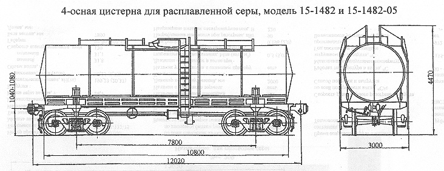

Назначение: для перевозки серы
Параметры
| Номер проекта | 1482.00.000 |
| Технические условия | ТУ 24.05.419-79 |
| Модель вагона | 15-1482 15-1482-05 |
| Тип вагона | |
| Изготовитель | ПО "Ждановтяжмаш" |
| Грузоподъемность, т | 67 65,5 |
| Масса тары вагона, т | 25,8 27,4 |
| Нагрузка: статическая осевая, кН(тс) |
227,4(23,2) 229,85(23,43) |
| погонная, кН/м(тс/м) | 75,6(7,72) 75,75(7,73) |
| Объем котла, м3: полный |
38,5 |
| полезный | 37,6 |
| Скорость конструкционная, км/ч | 120 |
| Габарит | 02-ВМ(02-Т) |
| База вагона, мм | 7800 |
| Длина, мм: по осям сцепления автосцепок |
12020 |
| по концевым балкам рамы | 10800 |
| Высота от уровня верха головок рельсов максимальная, мм | 4470 4264 |
| Количество осей, шт. | 4 |
| Модель 2-осной тележки | 18-100 |
| Наличие переходной площадки | нет |
| То же с ручным тормозом | нет |
| Наличие стояночного тормоза | есть |
| Диаметр котла внутренний,мм | 2200 |
| Длина котла наружная с изоляцией,мм | 11030 |
| Количество верхних люков, шт. | 1 |
| Наличие уклона котла к сливному прибору | есть |
| Источник тепла | электронагреватель трубчатый типа ТЭН-200Д |
| Давление создаваемое в котле при гидравлическом испытании, МПа(кгс/см2) | 0,49(4,8) |
| Рабочее давление в котле при разгрузке, МПа(кгс/см2) | 0,196(2,0) |
| Потребляемоя мощность при разогреве, кВт | 90 |
| Напряжение питания электронагревателя, В | 220 |
| Рабочая температура в котле, °C | -50 - +150 |
| Время сохранения груза в жидком состоянии, сут | 4 |
| Скорость равномерного разогрева продукта по всей поверхности котла, ºС/ч | 3,2 |
| Способ выгрузки | верхний передавливанием, вакуумнасосом, сифонированием |
| Максимально допустимая температура загружаемого продукта, °C | +135 - +150 |
| Год постановки на серийное производство | 1968 |
| Возможность установки буфера | нет |
Примечания: у исполнения 15-1482-05 котел цистерны установлен на платформу рамной конструкции